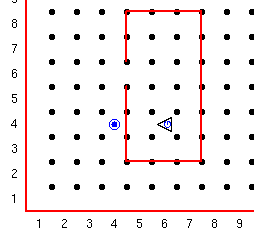

Elke dag wordt Guido gewekt door het geluid van de krant die voor de deur gegooid wordt. Guido wil graag op de hoogte blijven van alle robot nieuwtjes, dus gaat hij iedere morgen de krant ophalen.
Hieronder een afbeelding van Guido's huis met de krant, voorgesteld door een pieper, op de stoep.

Opdracht:
Schrijf een programma om Guido de krant te laten halen en hem weer naar zijn oorspronkelijke positie terug te laten keren. Gebruik in dit programma je nieuwe functie "rechtsaf" en maak een nieuwe functie "keerom".
Je zult ook de pieper moeten plaatsen, zoals in het voorbeeld, in je wereld bestand. Je kunt "wereld constructeur" hiervoor gebruiken. De tweede regel wordt gebruikt om de pieper te plaatsen, de eerste twee cijfers zijn de locatie en de derde geeft het aantal piepers aan.
Laat Guido starten vanaf de positie in het voorbeeld, richting het westen. Laat hem de krant (pieper) halen en weer op zijn plek terug keren in dezelfde richting als in het begin.
Deze serie Guido van Robot lessen zijn geschreven door
Roger Frank.
Commentaar and suggesties over deze lessen kunnen gestuurd worden naar
Stas Zytkiewicz die de lessen
vertaalde naar het Nederlands.
De orginele lessen zijn te vinden op de
Guido van Robot website.
Copyright
© 2003 Jeffrey Elkner.
© 2007 Stas Zytkiewicz.